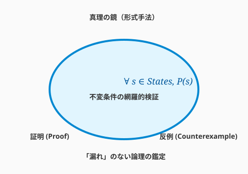

4.7 【外伝】真理の鏡——形式手法による「絶対に壊れない」証明

導入: テストの限界を超える
第4章を通じて、あなたはテストという守護魔法を学びました。しかし、どれほど多くのテストケースを重ねても、エドガー・ダイクストラが喝破した通り、「テストは不具合の存在を示すことはできるが、不具合の不在を証明することはできない」のです。
100万回の実験（テスト）で成功しても、100万1回目に「詰み（デッドロック）」が発生する可能性はゼロではありません。この絶望的な問いに対する、もう一つの極端な解答が「形式手法（Formal Methods）」です。

これは「実験」ではなく、数学的な「証明」によって、術式の正しさを宣言する究極の鑑定術です。
真理の数式：モデル検査
形式手法の中でも、現代のアルケミストにとって実用的なのが「モデル検査」という技法です。AlloyやTLA+といった道具を使い、設計を論理学の言葉で記述します。
「詰み」を許さない
例えば、QuestForgeの「パーティ編成と同時にクエスト受注をする」ロジックを論理式で描きます。 AIという強力な計算機を使って、「考えうるすべての状態」を網羅的に探索させます。もし、宇宙が滅びるまでの時間のどこかでデッドロックが起きる可能性があるなら、形式手法はその「反例」を、数学的な確信を持って突きつけてきます。
究極の抽象化
形式手法は、コードそのものを書くことではありません。「設計の魂」を記述することです。 複雑な分散システムや、人命に関わる医療機器、巨額の資産を扱う金融システムの心臓部において、この「真理の鏡」は欠かせない装備となっています。
まとめ
- 証明の力: 実験（テスト）による安心ではなく、証明による確信を得る。
- 設計の鑑定: 複雑な状態遷移や並行処理の「設計ミス」を、実装前に摘み取る。
- 賢者の選択: すべてに使う必要はない。システムの最も重要な「要（かなめ）」にだけ、この強力な鏡をかざす。
真理は常に一つです。論理の刃を研ぎ澄まし、不確実性の霧を切り裂きましょう。
AIへの詠唱例
以下のシステムの挙動について、TLA+ または Alloy のモデル記述を作成したいです。
[システムの振る舞い（例：2つのプロセスが共通のリソースを奪い合う）を記述]
想定外の状態（不変条件の違反）が起きないことを検証するための、基本的なモデルの雛形を書いてください。